Mine
Mine · Yamaguchi
Mine
Highlighted on the Yamaguchi map.
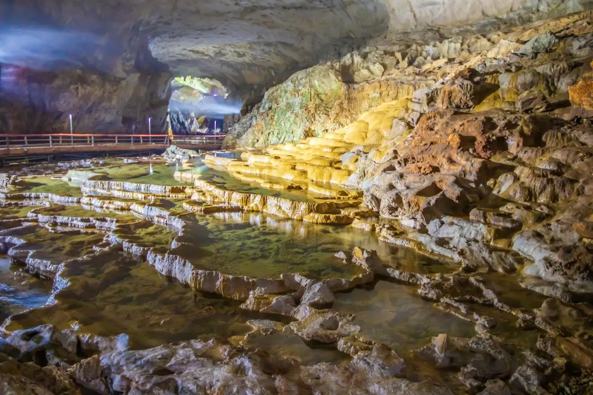
Dining
やまむら
やまむら
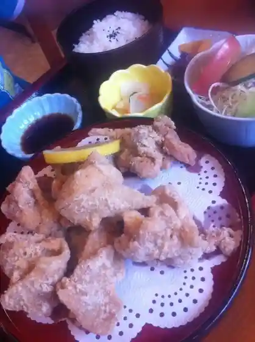
弁天会館
弁天会館
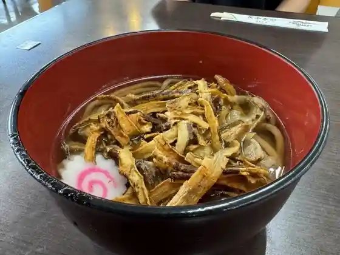
観光会館 安富屋 レストラン
観光会館 安富屋 レストラン
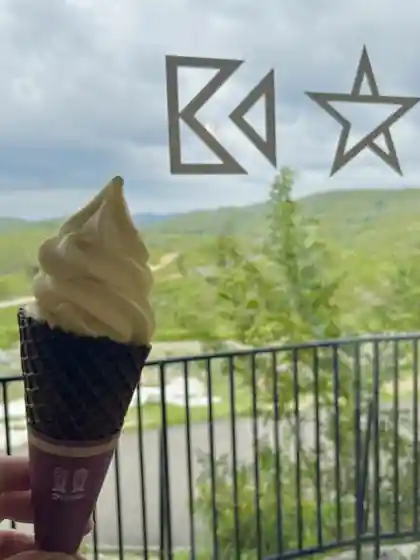
ミネ 秋吉台ジオパークセンター カルスター
ミネ 秋吉台ジオパークセンター カルスター
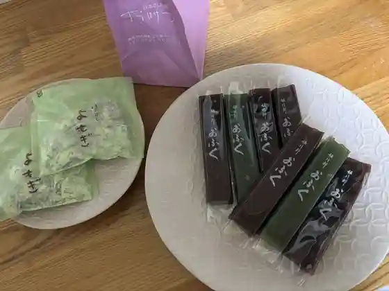
おほげつ
おほげつ
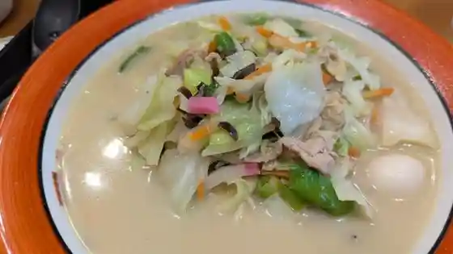
美東ちゃんぽん亭
美東ちゃんぽん亭
手打ちうどん よしの
手打ちうどん よしの
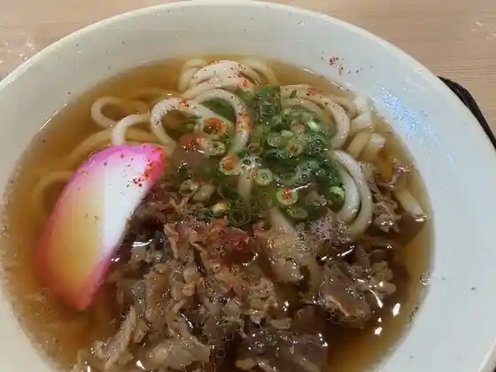
麺処 瓦屋
麺処 瓦屋
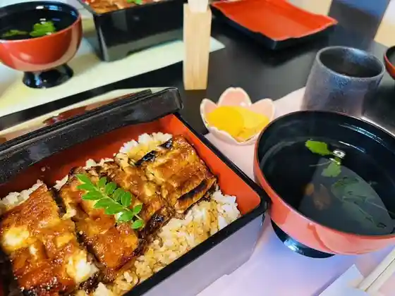
旬菜庵 昭八
旬菜庵 昭八
味あい
味あい
シャーベットスタンド
シャーベットスタンド
道の駅おふく
道の駅おふく
オフク ダイニング
オフク ダイニング
美東サービスエリア（下り線）フードコート
美東サービスエリア(下り線)フードコート
Pizzeria MASA
Pizzeria MASA
美東サービスエリア（上り線）スナックコーナー・フードコート
美東サービスエリア(上り線)スナックコーナー・フードコート
麺家 你好
麺家 你好
朝日館
朝日館
カフェ・レストラン sincerite
sincerite
練粉屋
練粉屋
鳳瓊
鳳瓊
天宿の杜 桂月
天宿の杜 桂月
和屋
和屋
レストランせきギャラリー
レストランせきギャラリー
斉藤商店
斉藤商店
プチラボベーカリー
プチラボベーカリー
キーズカフェ 美東サービスエリア下り店
キーズカフェ 美東サービスエリア下り店
ぽんぽこの里
ぽんぽこの里
まなまな
まなまな
台観望 合歓店
台観望 合歓店
西寺水神公園そうめん流し
西寺水神公園そうめん流し
ソノダコーヒー
ソノダコーヒー
アルボレオ
アルボレオ
R's cafe
R&39s cafe
ぷらすわん
ぷらすわん
キララあきよし
キララあきよし
串焼き居酒屋 厚狭川
串焼き居酒屋 厚狭川
手打ちそば 蕎鉄
手打ちそば 蕎鉄
和食や よろず
和食や よろず
台観望 台上店
台観望 台上店
レストラン古那
レストラン古那
泉流庭
泉流庭
長州からあげ亭
長州からあげ亭
麺屋たいが
麺屋たいが
大黒屋
大黒屋
ひろなカフェ
ひろなカフェ
Uvale!
Uvale
オクル
オクル
美東サービスエリア下り線ショッピングコーナー
美東サービスエリア下り線ショッピングコーナー
秋芳館 鯉の館
秋芳館 鯉の館
大正洞清風苑
大正洞清風苑
鳥美月
鳥美月
Cafe Brass
Cafe Brass
美東サービスエリア(上り線)ショッピングコーナー
美東サービスエリア(上り線)ショッピングコーナー
道の駅みとう
道の駅みとう
HITONAMI local motion
HITONAMI local motion
ごはん屋 維新の里
ごはん屋 維新の里
新高館
新高館
NONNOカフェレストラン
NONNOカフェレストラン
パン工房 ともちゃん
パン工房 ともちゃん
むらのレストラン 和桜
むらのレストラン 和桜
LIME STONE
LIME STONE
CENTERPIECE
CENTERPIECE
美祢グランドホテル
美祢グランドホテル
らあめん花月嵐 美東サービスエリア店
らあめん花月嵐 美東サービスエリア店
きれん製菓 秋芳洞入口店
きれん製菓 秋芳洞入口店
ファイアーヒル
ファイアーヒル
観光会館 安富屋 売店
観光会館 安富屋 売店
るりいろ工房
るりいろ工房
きよすぎ
きよすぎ
菊美食堂
菊美食堂
フローラ洋菓子店
フローラ洋菓子店
ソレイユ
ソレイユ
松鶴園
松鶴園
シエスタ 秋吉台
シエスタ 秋吉台
秋吉台家族旅行村 ログハウス食堂
秋吉台家族旅行村 ログハウス食堂
麦cafe
cafe
レッサーパンダが見えるレストラン
レッサーパンダが見えるレストラン
ほっとビレッジ美東
ほっとビレッジ美東
彩りのやまとや
彩りのやまとや
大平楽焼肉店
大平楽焼肉店
鳥旨酒処 美萩
鳥旨酒処 美萩
美東サービスエリア テイクアウトコーナー
美東サービスエリア テイクアウトコーナー
おかふく
おかふく
MITOU工房
MITOU
ふくちゃん
ふくちゃん
セントラルパークゴルフ倶楽部 レストラン
セントラルパークゴルフ倶楽部 レストラン
あまいろcafe
cafe
レークスワンカントリー倶楽部 美祢コース
レークスワンカントリー倶楽部 美祢コース
つぼねや
つぼねや
秋吉台ユースビレッジ
秋吉台ユースビレッジ
御堀堂 中国自動車道下り線 美東SA店
御堀堂 中国自動車道下り線 美東SA店
七福屋
七福屋
きららオーガニック・ライフ
きららオーガニック・ライフ
玄
玄
憩処 母譜
憩処 母譜
圭
圭
美祢ブルーベリーガーデン
美祢ブルーベリーガーデン
友永商店
友永商店
ジョイフル 山口美祢店
ジョイフル 山口美祢店
秋芳名水特産品直売所
秋芳名水特産品直売所
あぐりプラザおふく
あぐりプラザおふく
サファリランド 遊園地 軽食喫茶コーナー
サファリランド 遊園地 軽食喫茶コーナー
ベーカリー フェリーチェ
ベーカリー フェリーチェ
Buono
Buono
憩い処雪乃屋
憩い処雪乃屋
食彩館
食彩館
一富士
一富士
スリーアローカフェ
スリーアローカフェ
みとうの里cafe 美里美里
みとうの里cafe 美里美里
吉本畜産
吉本畜産
シェアキッチン紬
シェアキッチン紬
豆子郎 美祢店
豆子郎 美祢店
市民会館食堂
市民会館食堂
野原商店
野原商店
ほっともっと 美祢店
ほっともっと 美祢店
茶実
茶実
セブンイレブン 美東大田店
セブンイレブン 美東大田店
LAWSON 美祢インター前店
LAWSON
セブンイレブン 美祢長ヶ坪店
セブンイレブン 美祢長ヶ坪店
お好み亭 ごとう
お好み亭 ごとう
レストラン 天の川
レストラン 天の川
美祢社会復帰促進センター食堂
美祢社会復帰促進センター食堂
直売所みとう
直売所みとう
ふれあいCAFE
CAFE
寿司割烹 静
寿司割烹 静
ぶち酔い亭
ぶち酔い亭
みずしま
みずしま
喫茶・ぎゃらりい おじぎ草
喫茶・ぎゃらりい おじぎ草
サビエルカンパーナ 自然食ベーカリー
サビエルカンパーナ 自然食ベーカリー
サファリカフェ
サファリカフェ
はらだ
はらだ
ひまわりカフェ
ひまわりカフェ
うどん 立味 美祢店
うどん 立味 美祢店
Daily YAMAZAKI 美祢あつ店
Daily YAMAZAKI
鶴澤鮮魚
鶴澤鮮魚
サィサィみとう
サィサィみとう
落武者
落武者
アヒルの間借り食堂
アヒルの間借り食堂
キッチン景清 トロン亭
キッチン景清 トロン亭
味工房晋
味工房晋
味楽庵
味楽庵
焼き鳥ゆう
焼き鳥ゆう
野生系ラーメン MENYA JAPAN
MENYA JAPAN
168z
168z
LAWSON 美東大田店
LAWSON
雁飛荘
雁飛荘
オカタケ商店
オカタケ商店
サンマート 美祢店
サンマート 美祢店
喫茶 ミヤコ
喫茶 ミヤコ
セブンイレブン 美祢十文字店
セブンイレブン 美祢十文字店
ふらっと
ふらっと
日本海
日本海
ディッピンドッツ 秋吉台自然動物公園サファリランド
ディッピンドッツ 秋吉台自然動物公園サファリランド
untitled coffee
untitled coffee
トリップ ベース ココニイル
トリップ ベース ココニイル
Yasutomiya
Yasutomiya
Restaurant Yamamura
Restaurant Yamamura
Xavier Campana Akiyoshi Farm Garden Restaurant
Xavier Campana Akiyoshi Farm Garden Restaurant
Mine Akiyoshidai Geopark Center Karstar
Mine Akiyoshidai Geopark Center Karstar
Michinoeki Ofuku
Michinoeki Ofuku
Benten Kaikan
Benten Kaikan
Largo
Largo
Mito Service Area Orisen Food Court
Mito Service Area Orisen Food Court
Teuchiudonyoshino
Teuchiudonyoshino
Ajiai Restaurant
Ajiai Restaurant
Shunsaian Shohachi
Shunsaian Shohachi
Restaurant Seki Gallery
Restaurant Seki Gallery
Murano Restaurant Wazakura
Murano Restaurant Wazakura
Mito Service Area Up Line Restaurant
Mito Service Area Up Line Restaurant
Restaurant Kona
Restaurant Kona
Manamana
Manamana
Daikambo Nemu
Daikambo Nemu
Shuhokankoinoyakata
Shuhokankoinoyakata
Shutokan Wakimizutei
Shutokan Wakimizutei
Akiyoshidai Zoo Safari Land Restaurant
Akiyoshidai Zoo Safari Land Restaurant
Mito Service Area Up Line Shopping Corner
Mito Service Area Up Line Shopping Corner
Shuho Royal Hotel Shuho Kan Restaurant Karst
Shuho Royal Hotel Shuho Kan Restaurant Karst
Shuho Meisui Tokusanhin Chokubaisho
Shuho Meisui Tokusanhin Chokubaisho
Dining
Dining
Joyfull Yamaguchimine
Joyfull Yamaguchimine
Nitakakan
Nitakakan
Kaori Sabo
Kaori Sabo
Seifuen
Seifuen
Ichifuji Yakiniku
Ichifuji Yakiniku
Taiheiraku Yakiniku
Taiheiraku Yakiniku
Nagomiya
Nagomiya
Ishin no Sato
Ishin no Sato
Akiyoshi Menkobo
Akiyoshi Menkobo
Tairikudo
Tairikudo
Senryutei
Senryutei
Ofuku Nishidera Suijin Koen Somen Nagashi
Ofuku Nishidera Suijin Koen Somen Nagashi
Furuasa
Furuasa
Restaurant Amanogawa
Restaurant Amanogawa
Shokakuen
Shokakuen
Mine Rehabilitation Promoting Center Restaurant
Mine Rehabilitation Promoting Center Restaurant
Mihagi
Mihagi
Katsuragi
Katsuragi
Chobeidon
Chobeidon
Fujiya Shokudo
Fujiya Shokudo
Resto Hero
Resto Hero
Shichifukuya
Shichifukuya
Shokusai Shunsai
Shokusai Shunsai
Snack Yoai
Snack Yoai
Raifu Ramen
Raifu Ramen
Shokusaikan
Shokusaikan
Hoteiya
Hoteiya
Arboreo
Arboreo
Kiyosugi
Kiyosugi
Suzuki Shokudo
Suzuki Shokudo
Hashimotoya
Hashimotoya
Hori Shoten
Hori Shoten
Furumaidokoro Shunnohana
Furumaidokoro Shunnohana
Akiyoshidai Kazoku Ryoko Mura Log House Shokudo
Akiyoshidai Kazoku Ryoko Mura Log House Shokudo
Shiente
Shiente
Kushiyaki Izakaya Asakawa
Kushiyaki Izakaya Asakawa
Barbecue House Fire Hill
Barbecue House Fire Hill
Hotto Motto Mine
Hotto Motto Mine
Taimu
Taimu
Gen
Gen
Mineshiritsu Byoin Shokudo
Mineshiritsu Byoin Shokudo
Shimin Kaikan Restaurant
Shimin Kaikan Restaurant
Okafuku
Okafuku
Isofuji
Isofuji
Shizu
Shizu
Mirakuan
Mirakuan
Shuko Sasaean
Shuko Sasaean
Izakaya Ichi
Izakaya Ichi
Macchan Ekimae Ramen
Macchan Ekimae Ramen
Naniwaya
Naniwaya
Hakusan
Hakusan
Roji
Roji
Busu Musume
Busu Musume
Appare
Appare
Ajikobo Shin
Ajikobo Shin
Hot Village Mito
Hot Village Mito
Okonomitei Goto
Okonomitei Goto
Harada
Harada
Temboso
Temboso
Ikoidokoro Moppu
Ikoidokoro Moppu
Kikumi Shokudo
Kikumi Shokudo
Ichimaru Ya
Ichimaru Ya
Kameya Shokudo
Kameya Shokudo
Nihonkai
Nihonkai
Ochimusha
Ochimusha
Aikamu
Aikamu
Taiwanmura
Taiwanmura
Cocktail Due
Cocktail Due
Daikoku Restaurant
Daikoku Restaurant
Yoneya
Yoneya
Chotto Ryori Kei
Chotto Ryori Kei
Sambi Izakaya
Sambi Izakaya
Uzuki Noodles
Uzuki Noodles
Furatto
Furatto
Idol
Idol
Mine Grand Hotel Takezutsuan
Mine Grand Hotel Takezutsuan
Stay
美祢グランドホテル
美祢グランドホテル
やどまる美祢（みね）
やどまる美祢(みね)
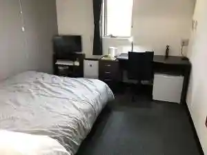
寺田旅館
寺田旅館
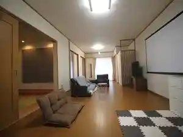
一棟貸しの宿 柚葉-yuzuha-
-yuzuha-
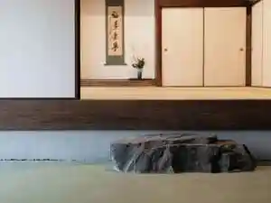
掘っ立て小屋遊々
掘っ立て小屋遊々
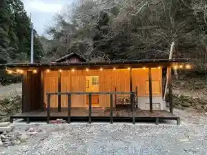
ＴＲＩＰ ＢＡＳＥ ＣＯＣＯＮＥＥＬ
TRIP BASE COCONEEL
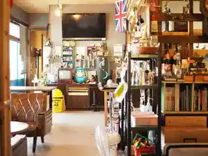
レドンド秋吉台
レドンド秋吉台
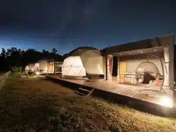
天宿の杜 桂月
天宿の杜 桂月
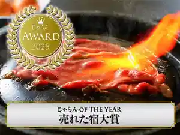
古民家民宿なかむら（農林漁業体験民宿）
古民家民宿なかむら(農林漁業体験民宿)
Sights
Shuhodo
Beppu Benten Ike
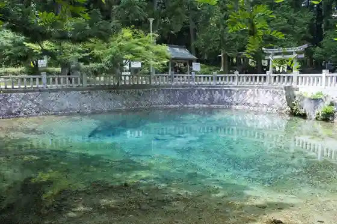
Akiyoshidai
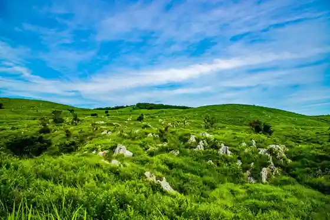
Shuhodo Mikokai Eriagaibingu Tour
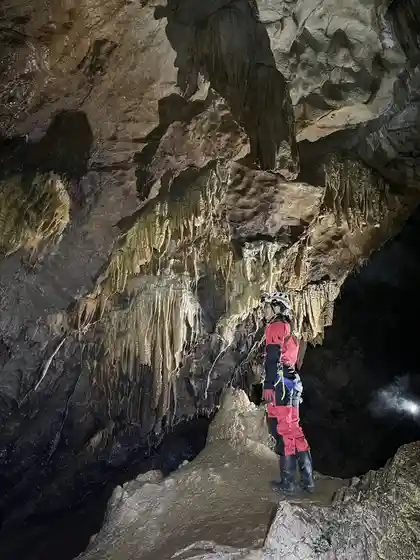
Akiyoshidai Safari Land
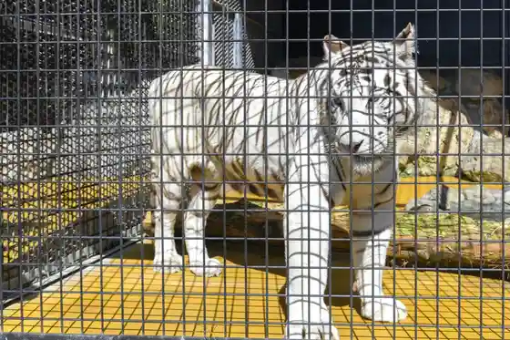
Tokutokurentaru
Mine Yoson Ba Tsuri Hori
Seguei Tour in Akiyoshidai
Kochi Zu Wo Katate Nimachiwo Aruko U (Ao Kei Hen)
Shuho Nashi Chokubai Tokoro (Shuho Rio San Hambai Kyodokumiai)
Kagekiyo Hora
Shuhodo Jio Tour
Mine Akiyoshidai Akuteibitei Center (Karst Gate)
Akiyoshi DAI Nature Supotsu
Nippon Deha Mezurashii " Muentan " no Tanko (Omine Tanden) no Eiko to Rakujitsu Womeguru Jiogaido Tour
Mine Akiyoshidai Jio Park Center (Karstar)
Mine Akiyoshidai Jio Park Jiogaido
Roadside Station Ofuku O Fuku Onsen
Roadside Station Mito
Anaba Mansai no 3.5km! Akiyoshidai Torekkingu Tour (Zekkei Kosu) !!
Mine Kaseki Kan
Akiyoshidai Kazokuryoko Village
Akiyoshidai Rifuresshu Park Oto Campground
Taisho Hora
Nambara Tera
Akiyoshidai E Baiku Tour
Kochi Zu Wo Katate Nimachiwo Aruko U (Shuho Hen)
Suijin Park (Suijin Falls) / Somen Nagashi
Man Kura no Oiwa Sato
Kagekiyo Hora Toron Onsen
Akiyoshidai Uokingu Tour
Shuhodo
Akiyoshidai De Kyokudai Peruseusu Za Ryuseigun Wo Kansatsu Shiyo
Shuhodo
Akiyoshidai Kokusai Geijutsu Village
Mine Sakura Park
Ota E Do Senseki Kinenhi
Cho to Dozan Ato
Mukashi Ha Sen Ken !? Ao Kei Village no Tatazumai Tour (Daichi no Kagayaki Kosu)
Akiyoshidai Eko Museum
Mori no Eki
Itsukushima Shrine no Kyoju Gun
Akiyoshidai Satoyama Saikuringu E Baiku Tour
Cho to Dozan Bunka Koryu Kan
Akiyoshidai Oto Campground
Shirozu no Ike
Akiyoshidai Kagaku Museum
Kin Rei Sha
Shuhodo Mikokai Eriagaibingu Tour ! Supurasshukosu !!
Asa Kawa
Beppu Nembutsu Yo
Nitanda Tameike Kakitsubata Gunsei Chi
Taisho Hora Mikokai Eriagaibingu Tour
Benten Masu Jiro Fesu 2025
Cho to no Shidare Sakura
Natsuyasumi ! Taisho Hora Komori Tour
Mine Folk History Museum
Sakurayama General Park
Akiyoshidai Kankoannai Boranteia no Kai
Mine Buruberii Garden
Katsuragi Yama
Foresutoadobencha Akiyoshidai
Rai Shima Matabe Zo
Hana Oyama
Mine Yakusho